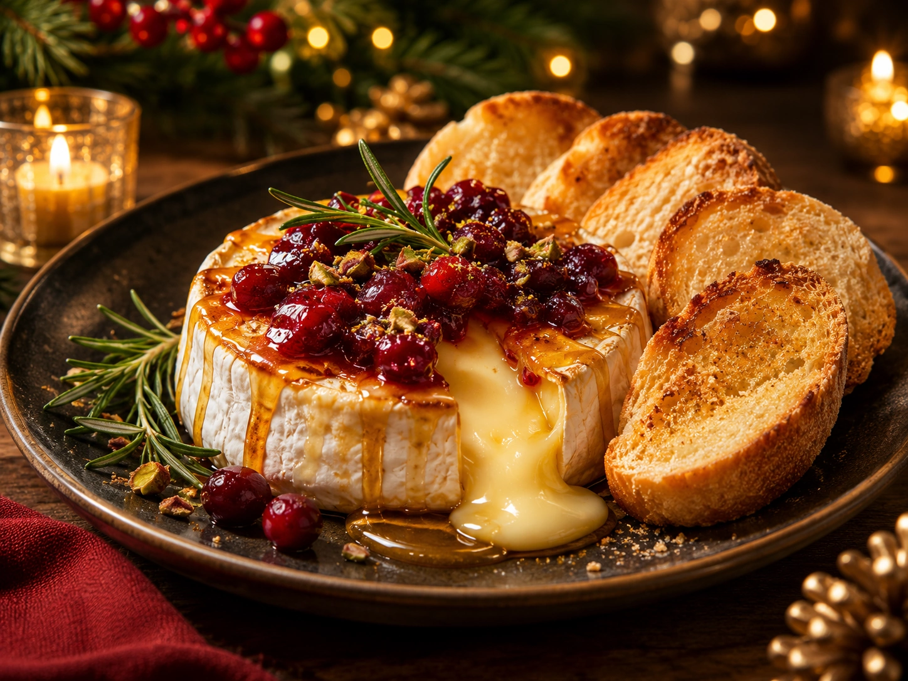
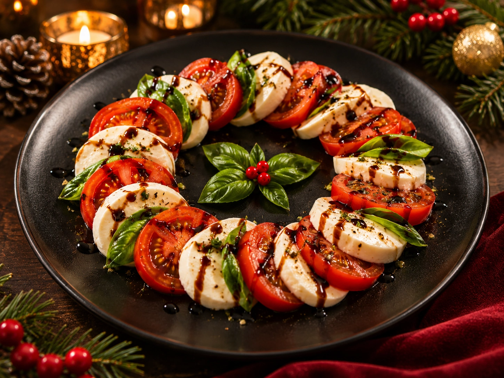
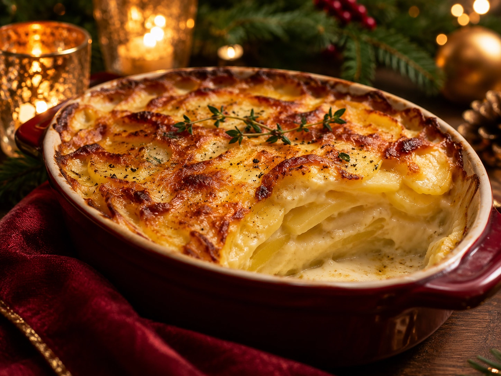
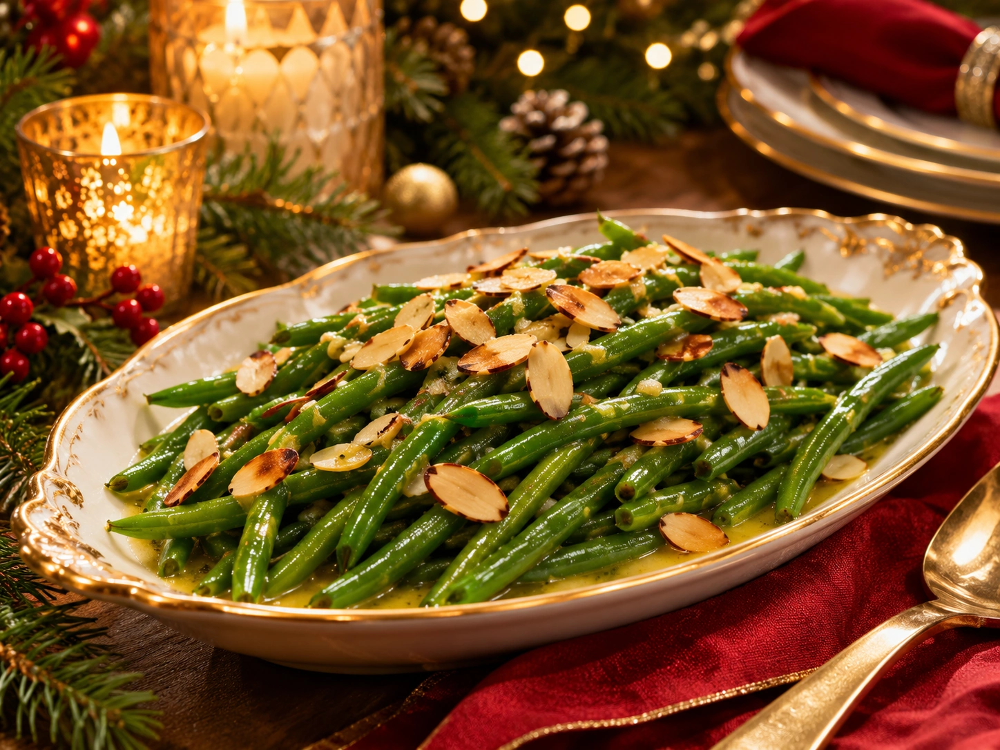
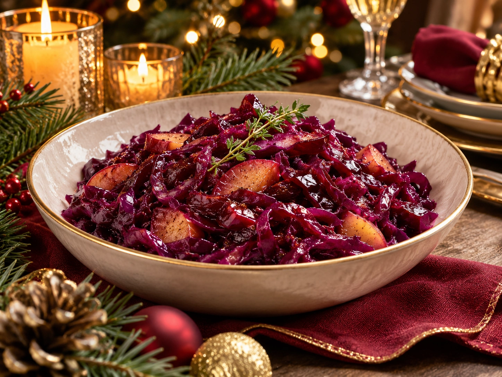

A LITTLE BOOK OF RECIPES
Made together.
Everything we need to make our first Christmas dinner.
01
Five coursesBaked Brie with Cranberry & Honey20 minutes
Ingredients
- 1 small brie wheel (125–200 g)
- 2 tbsp cranberry sauce or cranberry preserves
- 1 tbsp honey
- 1 small rosemary sprig
- 2–3 pandesal rolls, sliced
How to make it
- Heat the oven to 180°C. Remove any plastic from the brie and put it in a small oven-safe dish.
- Spoon cranberry sauce over the top, drizzle with honey and scatter over rosemary.
- Bake for 10–15 minutes, until the centre is soft. The exact time depends on the size of the brie.
- Lightly toast the pandesal. Set the hot dish on the table and share straight away.
02 Five coursesRoasted Garlic & Mushroom Soup45–50 minutes
Five coursesRoasted Garlic & Mushroom Soup45–50 minutes
Ingredients
- 250 g button mushrooms, sliced
- 1 small whole garlic bulb
- ½ onion, chopped
- 1 tbsp butter
- 350 ml chicken or vegetable stock
- 80 ml cooking cream
- 2 sprigs thyme (or ¼ tsp dried)
- 1–2 bread slices for croutons
- Black pepper and salt to taste
How to make it
- Heat the oven to 180°C. Slice the top off the garlic bulb, wrap in foil with a little oil and roast for 30–35 minutes until soft.
- Melt butter in a saucepan. Cook the onion for 3 minutes; add mushrooms and sauté for another 8–10 minutes.
- Squeeze in 3–5 roasted garlic cloves (save the rest for another dish). Add stock and thyme, simmer for 10–12 minutes.
- Blend until silky, then return to a low heat and stir in cream. Season gently.
- Toast small bread cubes until golden, then serve on top.
03
Five coursesChristmas Caprese Wreath10 minutes
Ingredients
- 150 g cherry tomatoes, halved
- 125 g fresh mozzarella, drained
- 1 small handful fresh basil leaves
- 1 tbsp extra-virgin olive oil
- 1 tsp balsamic glaze
- A little salt and black pepper
How to make it
- Pat the mozzarella dry, then slice or tear into bite-sized pieces.
- Arrange the tomatoes, mozzarella and basil in a round wreath on a serving plate.
- Drizzle lightly with olive oil and balsamic glaze, and finish with salt and pepper.
- Serve immediately or leave at cool room temperature for a few minutes before eating.
04 Five coursesPineapple, Orange & Honey Glazed Ham45–75 minutes*
Five coursesPineapple, Orange & Honey Glazed Ham45–75 minutes*
Ingredients
- 750 g–1 kg fully cooked, ready-to-eat ham
- 80 ml pineapple juice
- 50 ml freshly squeezed orange juice
- 1½ tbsp honey
- 1 tbsp brown sugar
- 1 tsp Dijon or yellow mustard
- A few whole cloves, optional
How to make it
- Confirm that the ham is fully cooked. Check the packaging for its specific reheating temperature and duration; a raw or uncooked ham needs a different recipe.
- Heat the oven to about 160°C, put the ham in a small roasting dish with a splash of water, cover with foil, and warm according to the pack instructions.
- Meanwhile, simmer pineapple juice, orange juice, honey, sugar and mustard in a small saucepan for 6–8 minutes until lightly syrupy.
- For the final 15–20 minutes, uncover the ham, increase oven temperature to 180°C, brush with glaze, and baste once or twice until glossy.
- Let it rest for 10 minutes, then slice. Serve with the dauphinoise and vegetables.
05
On the sideGarlic & Thyme Potato Dauphinoise65–80 minutes
Ingredients
- 450 g potatoes, peeled if preferred
- 180 ml all-purpose or cooking cream
- 70 ml milk
- 1 large garlic clove, crushed
- 1 tsp butter for the dish
- 1 tsp fresh thyme leaves
- A little salt, pepper and nutmeg
- Optional: 25 g grated Parmesan or Gruyère
How to make it
- Heat the oven to 170°C. Butter a small baking dish (about 18 × 18 cm) and rub it with cut garlic.
- Slice potatoes very thinly, about 2–3 mm; a mandoline makes this easier.
- Layer the potato slices in the dish, seasoning lightly between layers. Warm cream, milk, garlic and thyme together, then pour over the potatoes.
- Cover with foil and bake for about 40 minutes. Uncover, optionally add a little cheese, and bake another 20–30 minutes until a knife passes through easily and the top is golden.
- Rest for 10–15 minutes before slicing. If prepared the day before, cool and refrigerate promptly, then reheat until piping hot.
06
On the sideAlmond Butter Baguio Beans12–15 minutes
Ingredients
- 180 g fresh Baguio beans, trimmed
- 15 g butter
- 1 garlic clove, thinly sliced
- 1 tbsp sliced almonds
- A small squeeze of calamansi
- Salt and black pepper
How to make it
- Bring a small pot of water to the boil. Cook the beans for 2–3 minutes, then transfer to cold water and drain.
- Toast the almonds in a dry pan for 1–2 minutes; set aside.
- In the same pan, melt butter, add garlic and cook briefly without browning.
- Toss the beans in the butter for 2 minutes. Finish with almonds, a little calamansi, salt and pepper.
07
On the sideBraised Red Cabbage with Apples45–55 minutes
Ingredients
- 250 g red or purple cabbage, shredded
- 1 small apple, diced
- 1 tbsp butter or olive oil
- 1 tbsp apple cider vinegar
- 1 tsp brown sugar
- 60 ml water
- Salt and black pepper
- Optional: tiny pinch of cinnamon
How to make it
- Melt the butter in a saucepan over medium heat. Add the cabbage and apple and stir for 3–4 minutes.
- Add vinegar, sugar, water, a little salt and optional cinnamon.
- Cover and simmer over a low heat for 30–45 minutes, stirring occasionally until softened. Add a spoonful of water if needed.
- Taste: it should be gently sweet and tangy, not sugary. Reheat before serving.
08Five coursesChristmas Mango Float Trifle20 minutes + chilling
Ingredients
- 2 ripe Philippine mangoes, diced
- 120 g mascarpone or soft cream cheese
- 150 ml cold whipping cream
- 1–2 tbsp condensed milk, to taste
- 5–6 graham crackers, broken into crumbs
- A tiny pinch of cinnamon
- Optional berries or mint to finish
How to make it
- Whip the cold cream just until soft peaks form. Mix mascarpone with condensed milk, then gently fold in the cream.
- Toss the graham crumbs with a tiny pinch of cinnamon.
- In two small glasses, layer crumbs, cream, and mango. Repeat, finishing with mango.
- Cover and chill for at least 4 hours, preferably overnight.
- Add berries or mint just before serving.
09 Christmas drinksClassic Mulled WineFOR TWO
Christmas drinksClassic Mulled WineFOR TWO
Ingredients
- 375 ml red wine
- ½ orange, sliced
- 1 small cinnamon stick
- 2 cloves and 1 star anise
- 1–2 tsp honey
How to make it
- Warm all ingredients in a small saucepan over low heat for 10–15 minutes, without letting it boil. Strain into two mugs.
10 Christmas drinksApple & Rosemary Mulled White WineFOR TWO
Christmas drinksApple & Rosemary Mulled White WineFOR TWO
Ingredients
- 375 ml white wine
- 100 ml cloudy apple juice
- 2 apple slices
- 1 sprig rosemary
- 1 small cinnamon stick
How to make it
- Gently heat with the fruit and spices for around 10 minutes; do not boil. Strain and serve warm.
11Christmas drinksRosemary & Calamansi FizzFOR TWO
Ingredients
- 60 ml freshly squeezed calamansi juice
- 160 ml cranberry juice
- 300 ml sparkling water
- Ice and 2 rosemary sprigs
How to make it
- Fill two glasses with ice. Divide the calamansi and cranberry juice between them, top with sparkling water, then garnish with rosemary.
12Christmas drinksHoney Lemon Hot ToddyFOR TWO
Ingredients
- 300 ml hot water
- 2 tsp honey
- 2 tbsp fresh lemon juice
- 1 cinnamon stick
- Optional: 30 ml whisky per glass
How to make it
- Stir honey and lemon into hot water, add cinnamon and pour into two warm mugs. Add optional whisky only if desired.